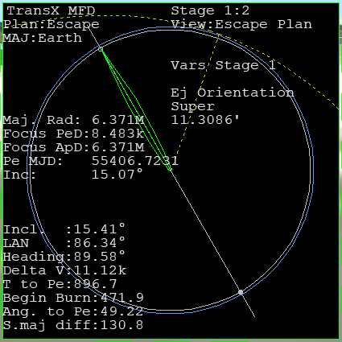
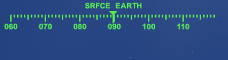
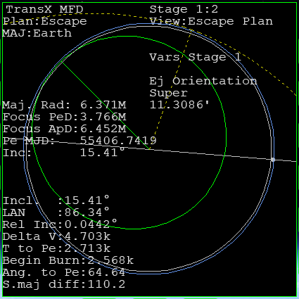
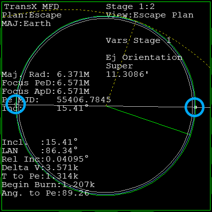
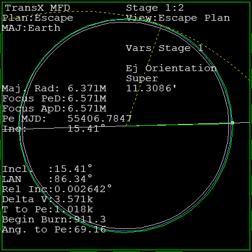

Part20 金星への打ち上げ・パーキング軌道へ
パーキング軌道に投入し、目標軌道とのずれを修正します。
パーキング軌道へ
Stage 1のView:Escape Planを開いておく。
Orbit MFDを開く。
離陸するとHeadingは表示されなくなる。
暗記するかメモを取っておくこと。

打ち上げ
通常の手順で離陸する。
離陸したら右旋回する。
Headingの方位に機首を向ける。
旋回を終えたら、機首を上げて上昇する。

針路を修正する
加速・上昇しつつ、左右に針路を変更する。
Rel Incを小さくする。

Orbit MFDでApAを確認する。
ApAが200kになったらエンジンを切る。
軌道投入
Apでメインエンジンを噴射する。
高度200kmの周回軌道に乗せる。
軌道面を一致させる
現在の軌道と、遷移軌道のずれを小さくする。
2つの交点
白い線の両端に、交点が2つ表示されている。
これらはAlign MFDのDN・ANに相当する。

| ○ | DN | NML + |
| ● | AN | NML - |
Rel Incをゼロにする
交点の少し手前で、宇宙船の姿勢を変更する。
NML +orNML -をクリック。
交点に到達したら、エンジンを噴射する。
メインエンジンかRCS LINを使う。
Rel Incを0に近づける。
終わったらオートパイロットを解除する。

e-005などの表示になることがあるが、これについては以下を参照すること。
TransXとIMFD - 数字の表し方
関連項目
TransXと以下のMFDを組み合わせて、打ち上げを補助することができる。